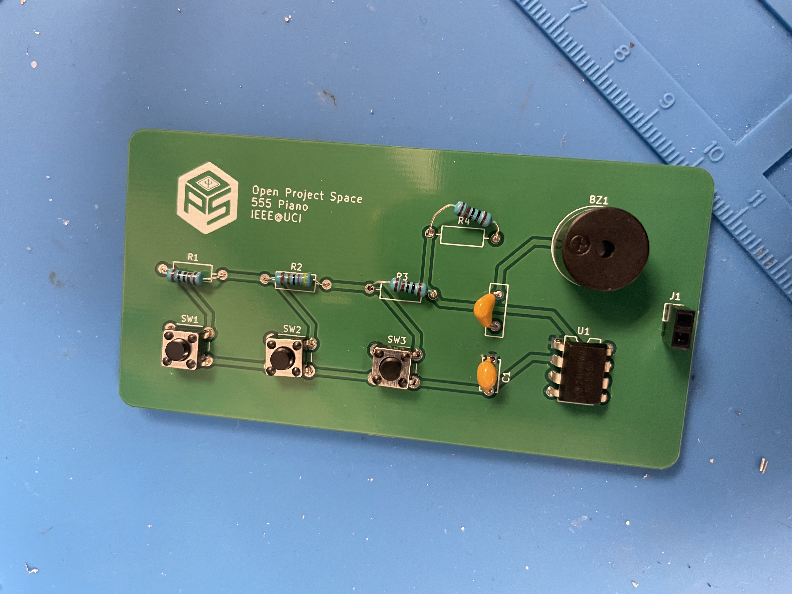
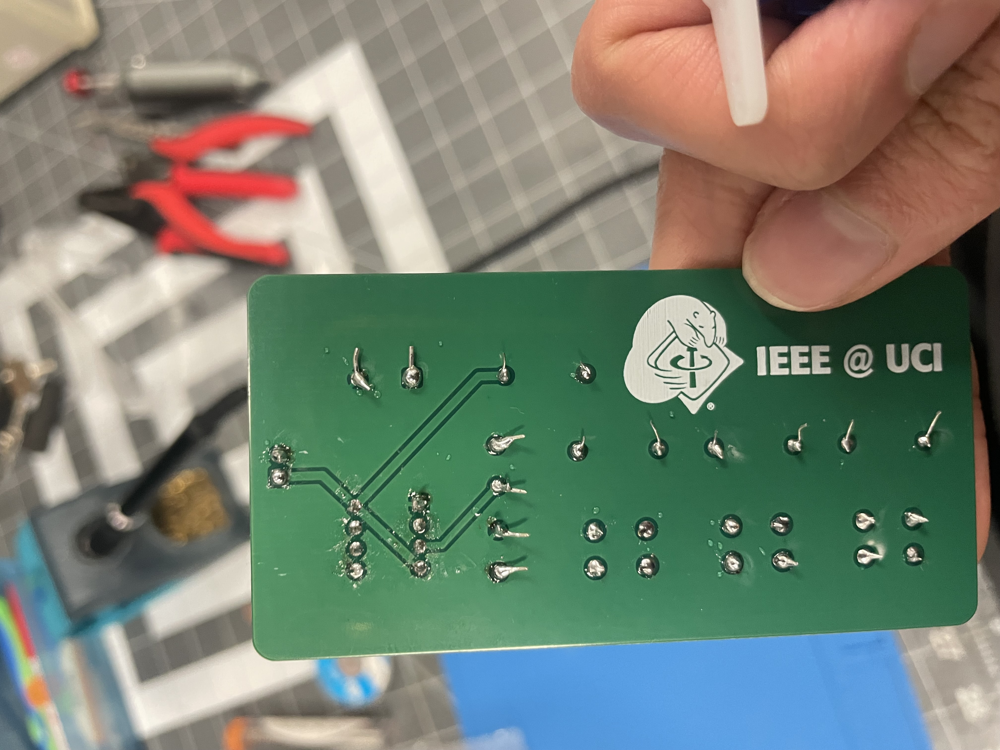

UCI IEEE Open Project Space · Fall 2025
Projects 1 & 2 — Foundational Electronics
Project 1 was a 9V LED circuit built on a breadboard and then soldered to perfboard. Project 2 used the NE555P Timer IC to build a blinking LED circuit and a 3-button piano, finishing with a KiCad PCB of the piano circuit.
Started by applying Ohm's Law. The LED's forward voltage is 2V, so the resistor sees 9V - 2V = 7V. With a forward current of 20mA, R = 7V / 0.02A = 350Ω. Read the resistor color bands to find the right value, built the circuit on a breadboard, confirmed it worked, then soldered it to perfboard. Learned to trim component legs before soldering so they don't bridge adjacent pads.
The NE555P in astable mode generates a square wave output. Connecting a passive piezo buzzer to the output turns that square wave into sound, and changing the resistor and capacitor values changes the frequency, which changes the pitch. Built a blinking LED version first to get familiar with the 555, then moved to a 3-button piano where each button selects a different capacitor to produce a different note.
Followed an instructor guide to design a PCB of the piano circuit in KiCad. First time doing schematic capture and PCB layout: placed component symbols, assigned physical footprints, drew the board outline, routed traces, and ran ERC and DRC to verify the design before exporting.
Blew a capacitor in Project 2. Didn't know electrolytic capacitors are polarized and put one in backwards. It popped and wasted a lot of time figuring out what happened. Also burned the 555 IC and the buzzer during PCB soldering because I forgot to trim the resistor legs before soldering the board. The untrimmed legs shorted adjacent pads when the board powered on.


